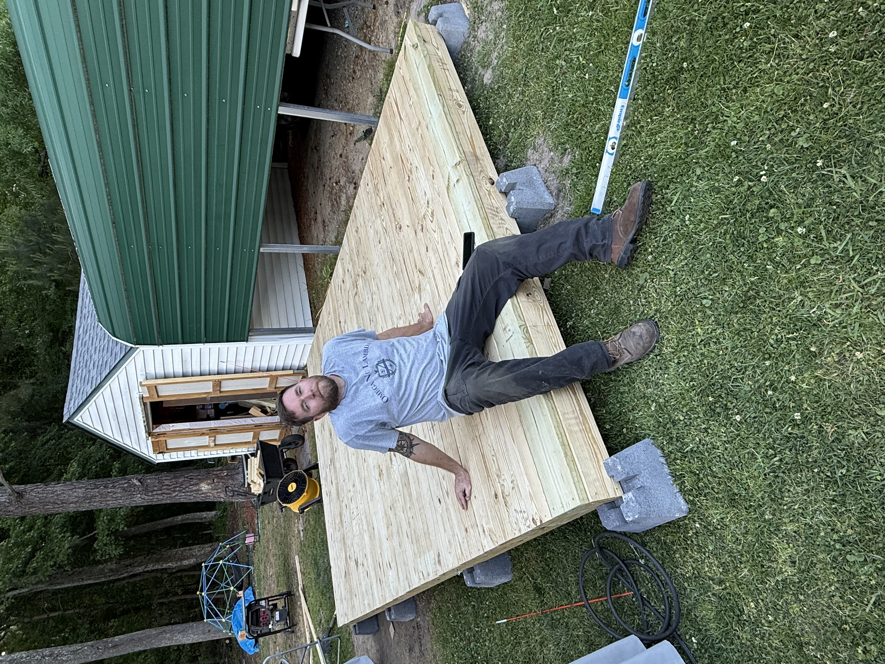

Achievements, Future Aspirations, and Personal Values
"Getting my degree in Project Management because I didn't think it was something I could do."
One of PJ's proudest accomplishments is earning a Bachelor's degree in Project Management. What makes this achievement significant is not only the degree itself, but the determination required to overcome self-doubt and prove that difficult goals can be achieved through persistence and hard work.

PJ enjoys creating projects that challenge his abilities and allow him to see tangible results from his work. Whether through woodworking or construction projects, he takes pride in building things that are both functional and meaningful.
Each completed project represents growth, problem-solving, patience, and a commitment to doing quality work.
"Be honest, have integrity, and treat others how you want to be treated."
Honesty, integrity, and respect guide the way PJ approaches life. These principles were shaped by childhood experiences, family influences, and the lessons learned through both personal and professional challenges.
Continuous self-improvement remains a major focus. Whether pursuing a certification, developing a new skill, or completing a woodworking project, PJ believes there is always an opportunity to learn and grow.
One dream PJ has held for years is purchasing a dirt bike and going riding with his stepson Isaac. More than just a hobby, this goal represents adventure, shared experiences, and making memories with family.